Montessori Approach
Hands-on learning, real-life experiences, independence and practical skills.

Creating the page…
LAFF BRITISH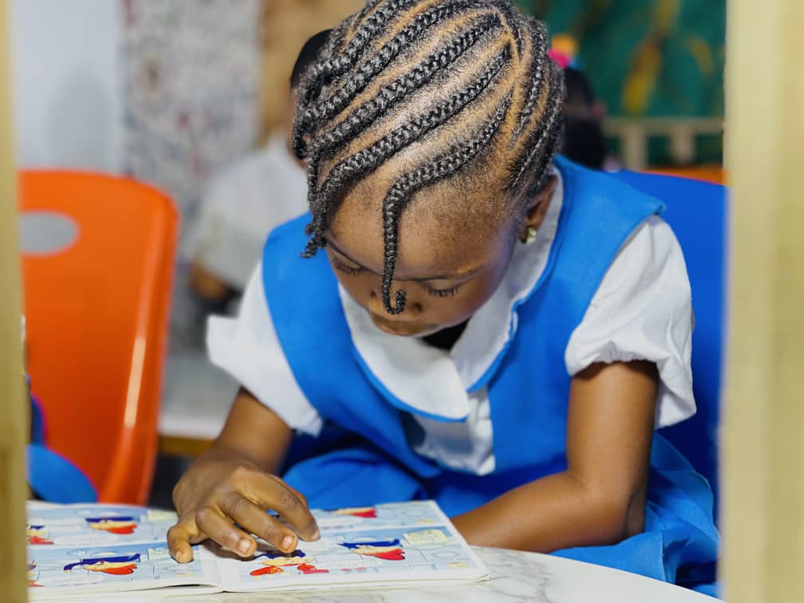
We provide a safe, nurturing and stimulating environment where every child is valued, inspired and empowered to reach their full potential.
Laff British Montessori School is a trusted institution committed to providing high-quality Montessori education for children from early years to primary level. We nurture each child’s unique talents, build strong values and prepare them for a successful future.
Read More →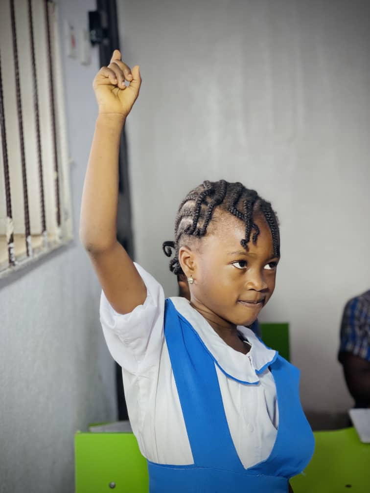
Hands-on learning, real-life experiences, independence and practical skills.
Your child’s safety and well-being are our top priority.
Passionate educators who truly care about every learner.
From playtime to classroom activities, every moment at Laff British Montessori School is filled with learning, laughter and growth.
View Full Gallery →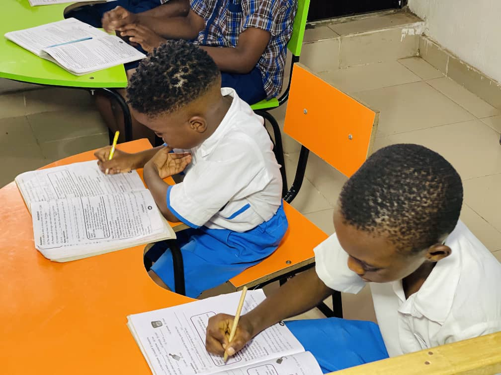
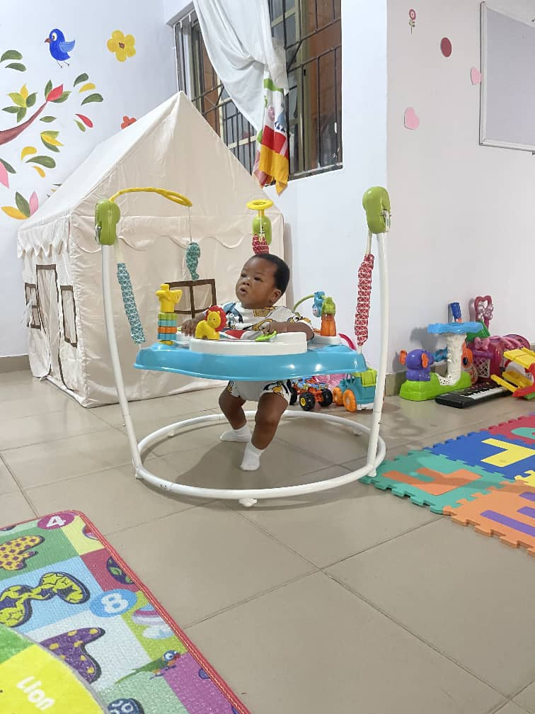
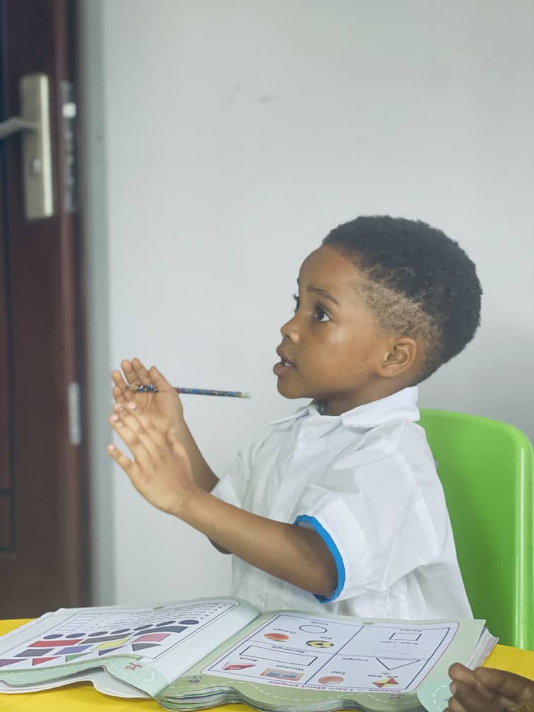
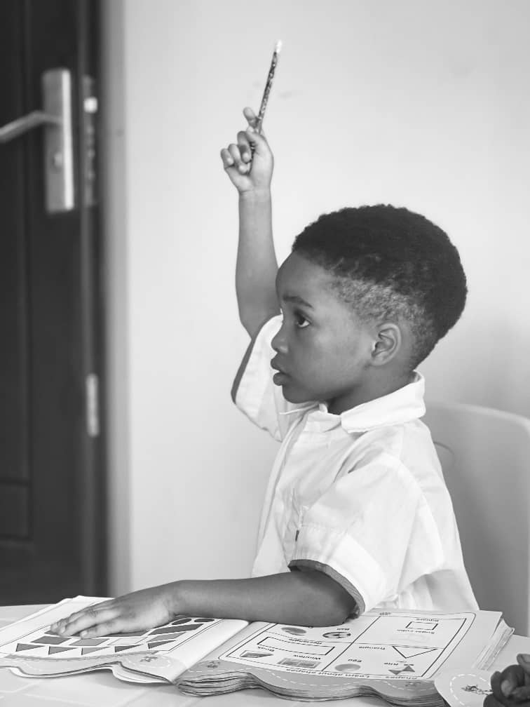
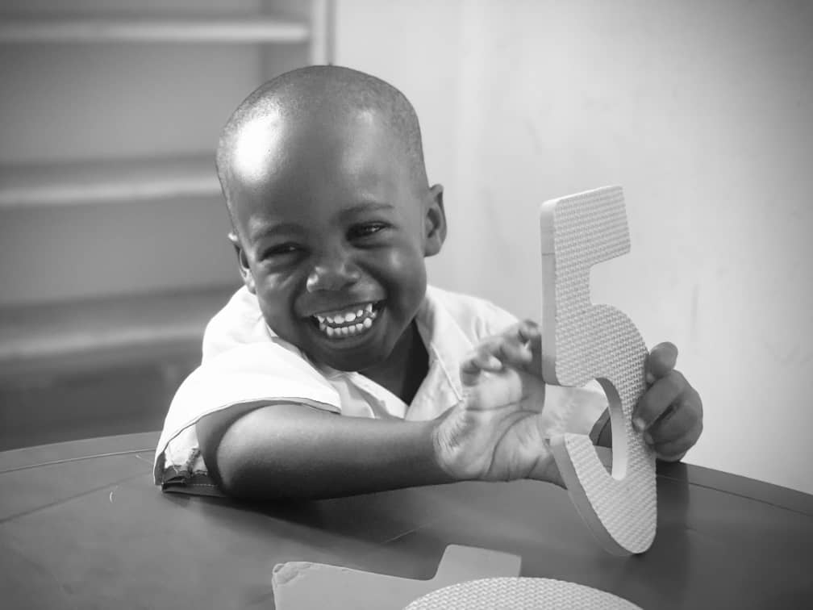
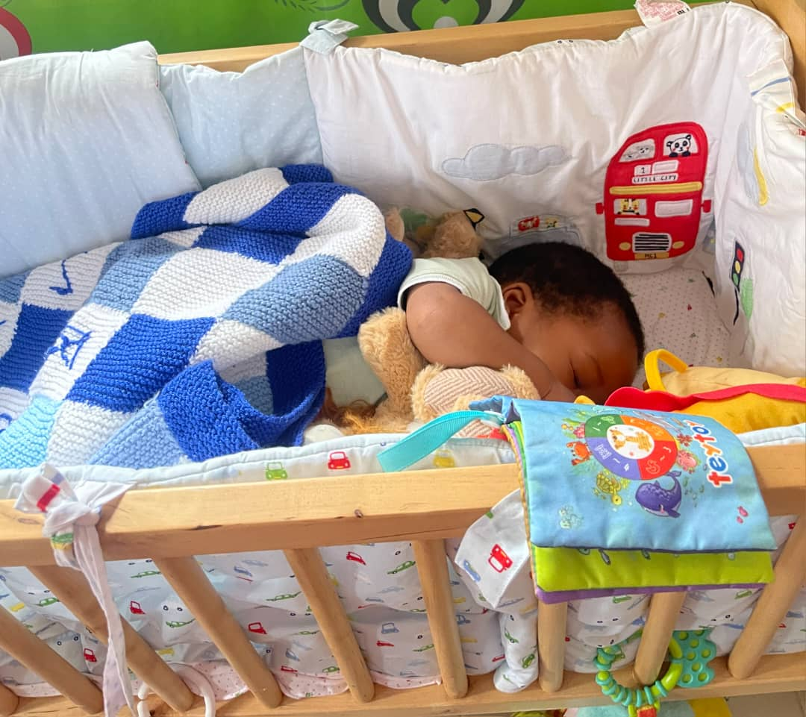
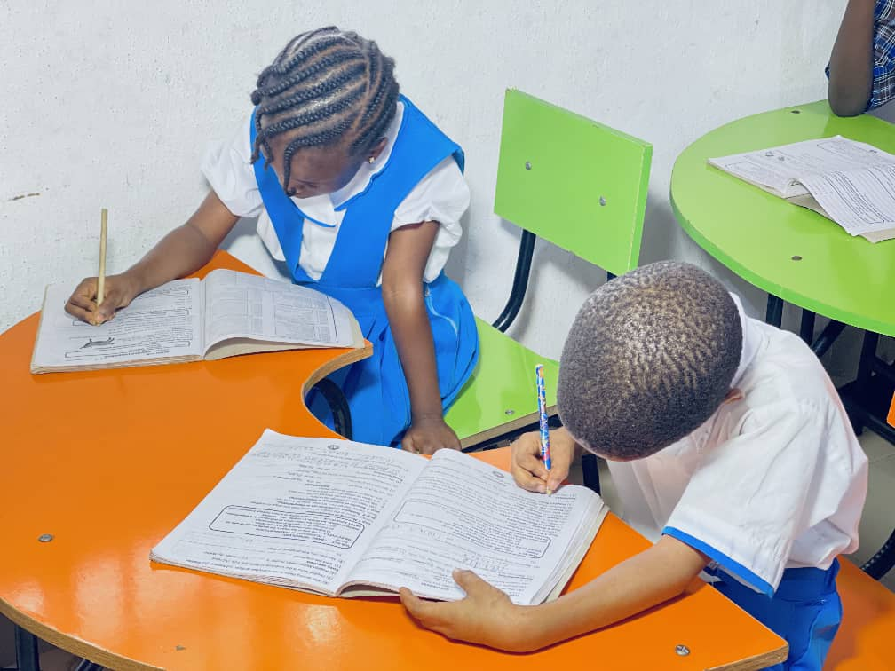
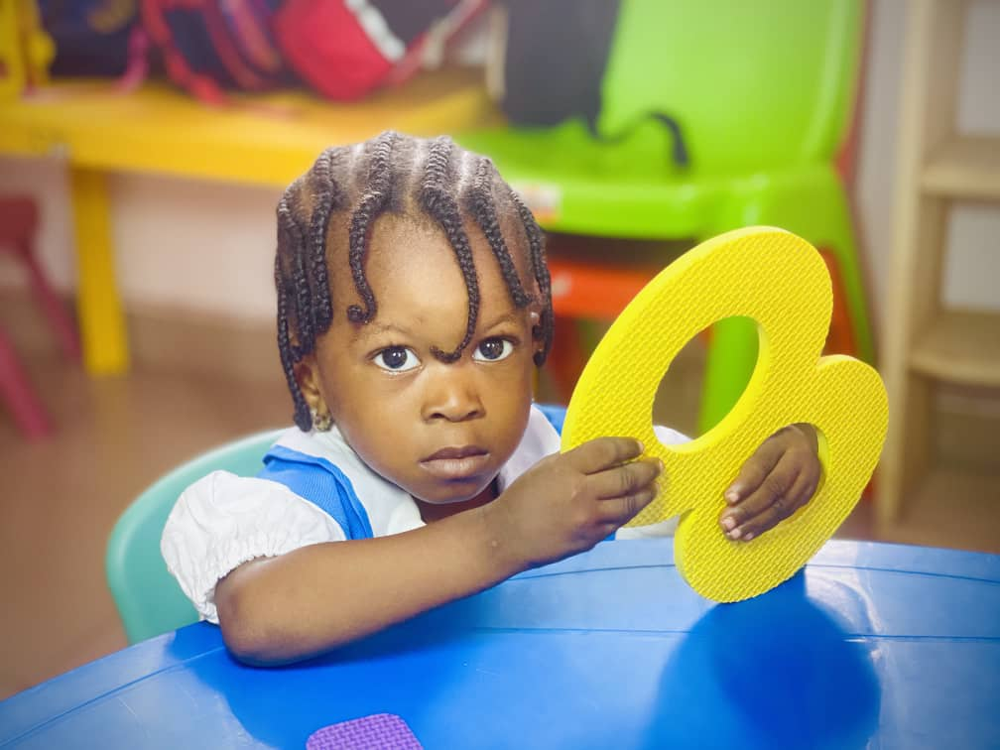
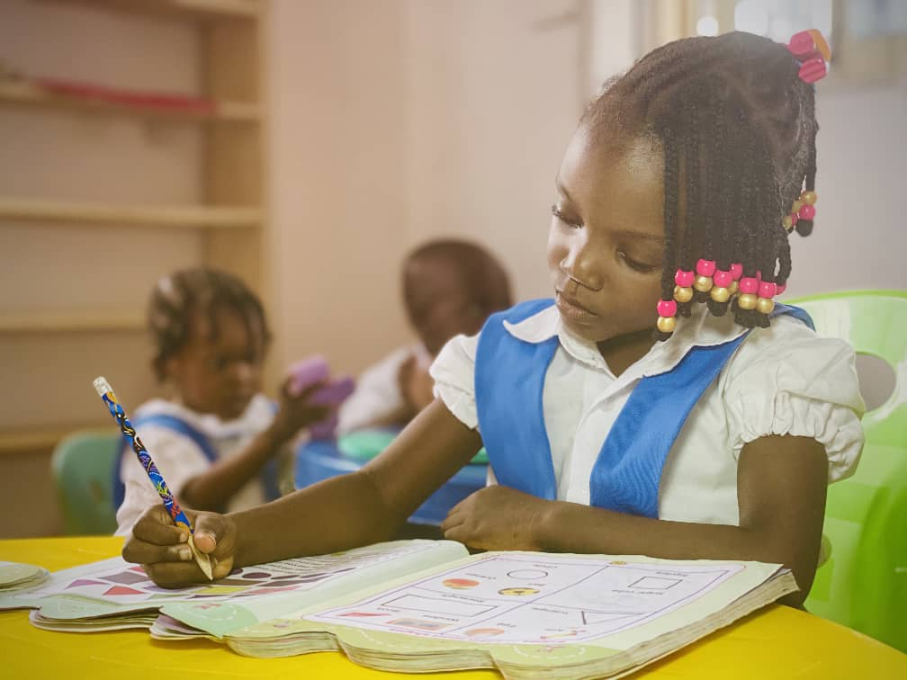
We offer a well-structured curriculum designed to support your child’s development at every stage, from early years to primary level.
Explore Our Programs →Building a strong foundation through play and discovery.
Developing creativity, confidence and critical thinking.
Preparing for a brighter future with academic excellence.
Sports, arts, ICT and more for a well-rounded child.
Find the latest news, events and updates from Laff British Montessori School.